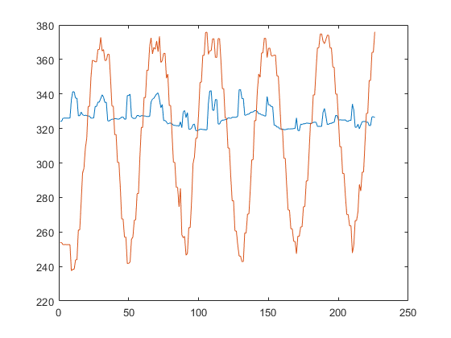
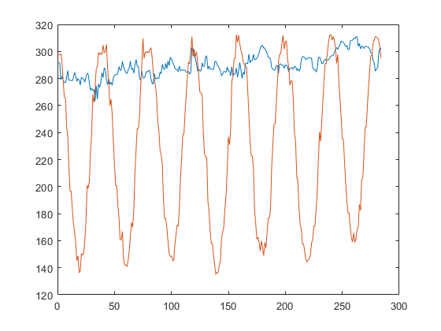
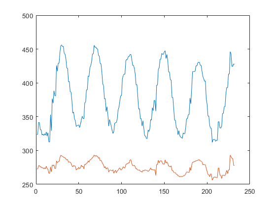
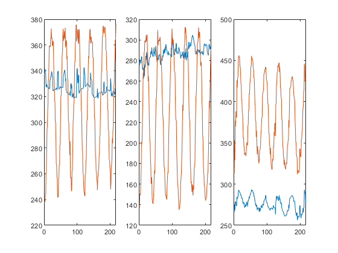
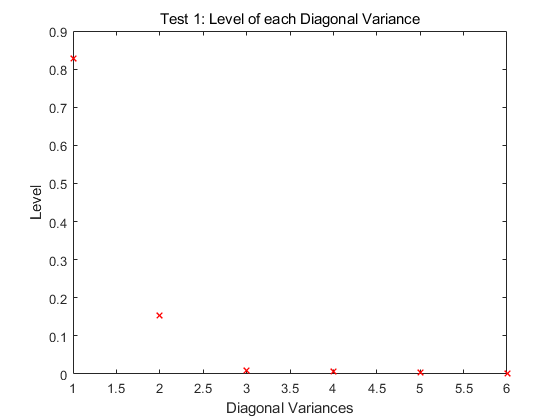
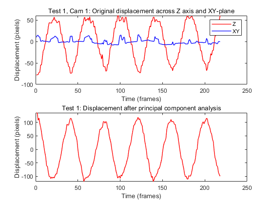

clear all; close all; clc load('cam1_1.mat'); load('cam2_1.mat'); load('cam3_1.mat'); numFrames1 = size(vidFrames1_1,4); numFrames2 = size(vidFrames2_1,4); numFrames3 = size(vidFrames3_1,4);
%cam1-1 data1 = []; for j = 1:numFrames1 %filter for section out the movement. width = 50; filter = zeros(480,640); filter(300-2.6*width:1:300+2.6*width, 350-width:1:350+width) = 1; X1 = vidFrames1_1(:,:,:,j); figure(1) %subplot(2,1,1),imshow(X1); %turn image into binary with gray scale filter. level = 0.95; X1b = im2bw(X1,level); X1b = double(X1b); X1b = X1b.*filter; %subplot(2,1,2),imshow(X1b); %label out section we need and find their centroid, store all objects in a %stats array. bw = bwlabel(X1b,4); stats = regionprops(bw, 'BoundingBox', 'Centroid'); hold on %initial center find and find center. centerX = 0; centerY = 0; for object = 1:length(stats) bc = stats(object).Centroid; centerX = centerX+bc(1); centerY = centerY+bc(2); end hold off centerX = centerX/length(stats); centerY = centerY/length(stats); %store center value into data array. data1 = [data1;centerX,centerY]; end plot(data1); saveas(gcf,'cam1test1.png')
cam2-1
data2 = []; for j = 1:numFrames2 %filter for section out the movement. width = 50; filter = zeros(480,640); filter(251-3*width:1:250+3*width, 290-1.3*width:1:290+1.3*width) = 1; X1 = vidFrames2_1(:,:,:,j); figure(1) %subplot(2,1,1),imshow(X1); level = 0.95; X1b = im2bw(X1,level); X1b = double(X1b); X1b = X1b.*filter; %subplot(2,1,2),imshow(X1b); bw = bwlabel(X1b,4); stats = regionprops(bw, 'BoundingBox', 'Centroid'); hold on centerX = 0; centerY = 0; for object = 1:length(stats) %bb = stats(object).BoundingBox; bc = stats(object).Centroid; centerX = centerX+bc(1); centerY = centerY+bc(2); %rectangle('Position',bb,'EdgeColor','r','LineWidth',2) %plot(bc(1),bc(2), '-m+') %a=text(bc(1)+15,bc(2), strcat('X: ', num2str(round(bc(1))), ' Y: ', num2str(round(bc(2))))); %set(a, 'FontName', 'Arial', 'FontWeight', 'bold', 'FontSize', 12, 'Color', 'yellow'); end hold off centerX = centerX/length(stats); centerY = centerY/length(stats); data2 = [data2;centerX,centerY]; end plot(data2); saveas(gcf,'cam2test1.png')
cam3-1
data3 = []; for j = 1:numFrames3 %filter for section out the movement. width = 50; filter = zeros(480,640); filter(250-1*width:1:250+2*width, 360-2.5*width:1:360+2.5*width) = 1; X1 = vidFrames3_1(:,:,:,j); figure(1) %subplot(2,1,1),imshow(X1); level = 0.95; X1b = im2bw(X1,level); X1b = double(X1b); X1b = X1b.*filter; %subplot(2,1,2),imshow(X1b); bw = bwlabel(X1b,4); stats = regionprops(bw, 'BoundingBox', 'Centroid'); hold on centerX = 0; centerY = 0; for object = 1:length(stats) %bb = stats(object).BoundingBox; bc = stats(object).Centroid; centerX = centerX+bc(1); centerY = centerY+bc(2); %rectangle('Position',bb,'EdgeColor','r','LineWidth',2) %plot(bc(1),bc(2), '-m+') %a=text(bc(1)+15,bc(2), strcat('X: ', num2str(round(bc(1))), ' Y: ', num2str(round(bc(2))))); %set(a, 'FontName', 'Arial', 'FontWeight', 'bold', 'FontSize', 12, 'Color', 'yellow'); end hold off centerX = centerX/length(stats); centerY = centerY/length(stats); data3 = [data3;centerX,centerY]; end plot(data3); saveas(gcf,'cam3test1.png')
%clean and format datapoint [M,I] = min(data1(1:25,2)); data1 = data1(I:end,:); [M,I] = min(data2(1:25,2)); data2 = data2(I:end,:); [M,I] = min(data3(1:25,1)); data3 = data3(I:end,:); %invert data3 on column data3vter = []; data3vter(:,1) = data3(:,2); data3vter(:,2) = data3(:,1); data2 = data2(1:length(data1), :); data3vter = data3vter(1:length(data1), :); figure(5) subplot(1,3,1), plot(data1); subplot(1,3,2), plot(data2); subplot(1,3,3), plot(data3vter); saveas(gcf,'cam1to3test1.png')
dataAll = [data1';data2';data3vter']; % Compute data size [M,N]=size(dataAll); % Compute mean for each row and subtract mean with all the data. mean=mean(dataAll,2); dataAll=dataAll-repmat(mean,1,N); % Deploy the SVD [u,s,v]=svd(dataAll'/sqrt(N-1)); %diagonal variances lam=diag(s).^2; %the principal components projection Y= dataAll' * v; %find signal sig=diag(s);
close all; figure(6) plot(1:6, lam/sum(lam), "rx", 'Linewidth', 1); title("Test 1: Level of each Diagonal Variance"); xlabel("Diagonal Variances"); ylabel("Level"); saveas(gcf,'pcaleveltest1.png') figure(7) subplot(2,1,1),plot(1:218, dataAll(2,:),"r",1:218, dataAll(1,:),"blue", 'Linewidth', 1); ylabel("Displacement (pixels)"); xlabel("Time (frames)"); title("Test 1, Cam 1: Original displacement across Z axis and XY-plane"); legend("Z", "XY") subplot(2,1,2) ,plot(1:218, Y(:,1),'r','Linewidth', 1); ylabel("Displacement (pixels)"); xlabel("Time (frames)"); title("Test 1: Displacement after principal component analysis"); saveas(gcf,'pcatest1.png') 